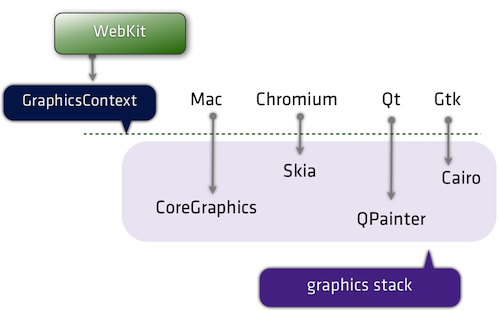
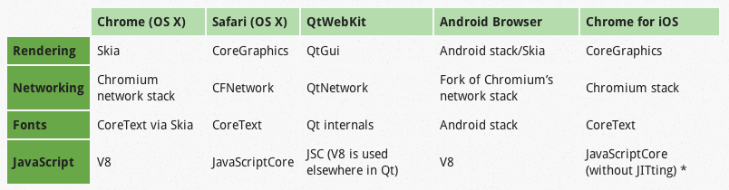

앱 세상에서 HTML5 생존기
HTML5 기반 모바일 단말용 게임 개발 및 최적화


Click의 시대가 지고
Touch가 앱천지를 만들다
HTML5는
Hype(과대 광고) or Hope(희망) 일까?
본 발표에서는
HTML5 기반 OK 캐쉬백 오락실
상용 개발시 기술 경험을 공유합니다.
OK 캐쉬백 오락실 기술 Overview
- Web UI: CSS3D, keyframe animation
- Game: Canvas/DOM Hybrid
- Webview: OK 캐쉬백 App Embedded
- OS: Android 2.3 이상, iOS
데모앱 설치: Google Play/T Store에서 OK 캐쉬백으로 검색
앱 세상에서 HTML5 생존기:
HTML5 기반 모바일 단말용 게임 개발 및 최적화
임상석 팀장 > Web 기술개발팀 > SK 플래닛

개발 이력 소개
- HTML5 Web App Platform: JavaScript (2011 - Now)
- WebKit Engine: Linux/Tizen C++, C (2008 - 2011)
- Mobile Firefox Browser: Linux C++ (2007 - 2008)
- L4/L7 Switch/ Apache Server: Linux, C (2001 - 2006)
HTML5 개발에 대한 단상
- 모바일 브라우져/모바일 Web에 대한 천시
- 제3의 OS로서의 HTML5 동력 상실
-
Cross Platform 대응 보다는 각 OS 최적화 개발
- 엔진 성능/기능 fragementation 심화
-
Android 버전간 성능 격차
-
Android/iOS간 성능 격차
- HTML5 전문 개발자 부족
-
JavaScript 정통한 개발자
-
Fragementation 극복
그래도 HTML5의 죽지 않았다
- No App Update
-
App update 저항감 회피
-
App Store를 통한 서비스 배포 지연 회피
- iOS/Android One Source 상용화
- WebView를 통한 Hybrid App의 일반화
-
사업/기획팀 비 개발자도 Hybrid App의 장점을 이해
SK 플래닛의 HTML5 상업적 활용 방향
- CSS2D/3D 기반 Web UI
- Canvas 기반 게임
Webkit과 Platform별 Port 이해하기



Webkit 주요 기능
- Parsing(HTML, XML, CSS, JavaScript)
- Layout
- Text, graphics rendering
- Image decoding
- GPU interaction
- Network access
- HW acceleration
WebKit 내부 Tree
- DOM tree: Document내의 모든 DOM node를 갖음
- RenderObject tree: DOM node중에 화면에 보이는 node
- RenderLayer tree: 한번에 같이 painting 할 RenderObject를 모아서 관리: 같은 z-index에 있는 node

DOM/Render Tree 복잡도 관리
- DOM node 및 Render Object 개수는 최소화
- DOM node 재활용: DOM node 상수 고정
- 동적으로 삽입/삭제
- display:none 설정 -> 해당 Render Object 제거, DOM node 유지
- visibility:hidden -> Tree 복잡도 유지, painting cost 절감
- animation동안 DOM 내용 변경 절대 지양
-
style 변경 -> layout -> painting -> bumpy animation
- iframe으로 view 분리 (sandboxing)
-
iframe으로 분리되면 아무리 복잡하더라도 서로 분리된 view간 영향을 주지 않음
-
long-running app 개발시에도 메모리 leak 대응 용이
GPU기반 합성
- CPU로 만들어진 texture는 다시 repaint되거나, 가속영역에서 제거되지 않을 경우 OpenGL ES 내에서 연속적인 합성을 위하여 재활용된다.

Chrome Dev Tool: Timeline
- 상단 panel
- Events: 시간축으로 발생한 event를 순차적으로 보여줌
- Frames: 시간축으로 매 frame 단위로 event를 순차적으로 보여줌
- Memory: 메모리 사용 양을 보여줌
- 하단 record panel
- Recalculate Style: 변경된 CSS 속성값에 따라 전체 style 값을 다시 계산
- Layout: 변경된 style값에 따라 element의 위치 값을 재계산
- Paint: layout이 완료된 RenderLayer들에 속한 element들을 z-ordering을 고려하여 그리
- Composite Layers: Document를 구성하는 모든 RenderLayer를 합성하여 화면에 최종 출력
- 각종 event fire: setTimout, requestAnimationFrame등
GPU 렌더링 영역 실시간 도시
- Web page의 HW 가속 Layer를 Graphical하게 출력 해줌
- 설치
- Chrome Canary의 about:flags page 진입
- experimental debugging feature enable
- browser restart
- DOM inspector 설정의 experimant Tab에서 "Show Layers Panel" 클릭
- Inspector 상단에 Layer panel 생성
Canvas Profiling
- 캔버스의 개별 Primitive 연산결과를 Frame by Frame으로 출력
- 성능 최적화시 필수 도구
최적화 절대 규칙: 이것만은 기억하자
- No painting while animating
- style 변경은 layout을 야기 시킴
- layout 결과는 painting
- less DOM complexity, less painting overhead
App-Embedded Branded Game
- iOS/Android 동시 지원
- App Embedded: 사용자 retention
- No 네이티브 앱 Update
- 30-50만명 랭킹
HTML5 canvas 기반 게임 개발
- 기존 오픈 소스 게임 엔진의 한계
- Mobile 단말 특화 기능
Game내 Object 표현
- Image 기반: 일반적이나 반복적인 scaling up/down
- Drawing primitive 조합: 최종 해상도 기준 한번에 그리기
canvas 동작하는 RunTime의 이해
- canvas HW 가속 미지원: Android 2.3.x, iOS4.0
- Kitkat의 Chrome Webview 성능 재앙
canvas 성능 분석
- DOM/GPU과 Canvas 렌더링 성능 분석
Kitkat 재앙
- Kitkat 4.4, 4.4.2에서 painting 성능 매우 저하됨
- Google의 플랫폼 버그: 이미 시장에서 50%이상 차지
DOM/Canvas Hybrid
- Painting 영역을 최소화
- 애니메이션이 없는 게임 Object를 DOM으로 분리
DOM Node Pool
- Viewport 내의 게임 오브젝트를 담는 DOM을 Object Pool로 관리
- DOM Node의 재활용
- 애니메이션이 없으므로 Object 이미지도 재활용 필수
Invalidate 영역 관리
- 이전 Frame을 복사하여 재활용
- Invalidate 영역만을 redraw
Source 이미지 크기 관리
- Sprite 이미지 사용시 네트워크 요청 개수를 줄일수 있음
- 원본이미지의 크기가 커지면 커질수록 destination 이미지 크기가 고정이어도 속도 저하
- 자주 쓰이는 object는 개별 이미지로 분리
Garbage Collection 최소화
- 게임내 모든 주요 Object는 Static Object Pool을 통해 관리
- Static Object 구현 방식: Single Array, Double Array, Doubly Linked List
- Single Array: push/pop이 가종 빠름
- GC를 완벽히 차단하는 것은 매우 어렵다
해상도 파헤치기
- 최종 화면에 하나의 Pixel이 그려지기 위해서는 다단계 Scale 발생
- canvas.width, canvas.height
- canvas.style.width, canvas.style.height
- drawImage(원본 이미지 위치, destination scaled 위치)
- window.devicePixelRatio
Game 실행 환경 분리
- canvas 게임을 Web Page에 embedding 시 canvas rendering 성능 저하
- fps가 swing 하는 현상이 발생하며 30% 저하
- Web Page에 embed 시키지 말고 별도의 HTML로 작성해서 로딩
요리조리 베이스볼 적용 사례
- DOM/Canvas Hybrid
- Smart repaint
요리조리 베이스볼 적용 사례
- 전광판 DOM으로 분리
- layout 연산으로 painting overhead가 증가하여 역효과
2048
- DOM/Canvas Hybrid
- Smart repaint
- DOM Node 개수 최소화, Table 제거
SPACE 2014
- clearRect VS fillRect
- 게임 배경 단순화
- 이전 Frame 1회 재활용
결론
- 모바일 단말에서 30 fps 가능하도록 게임을 기획
- 성능 최적화는 필수적